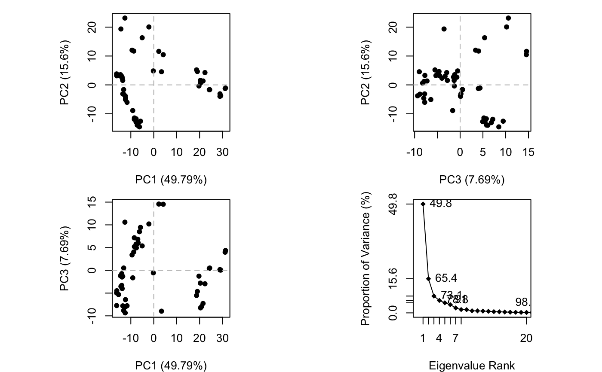
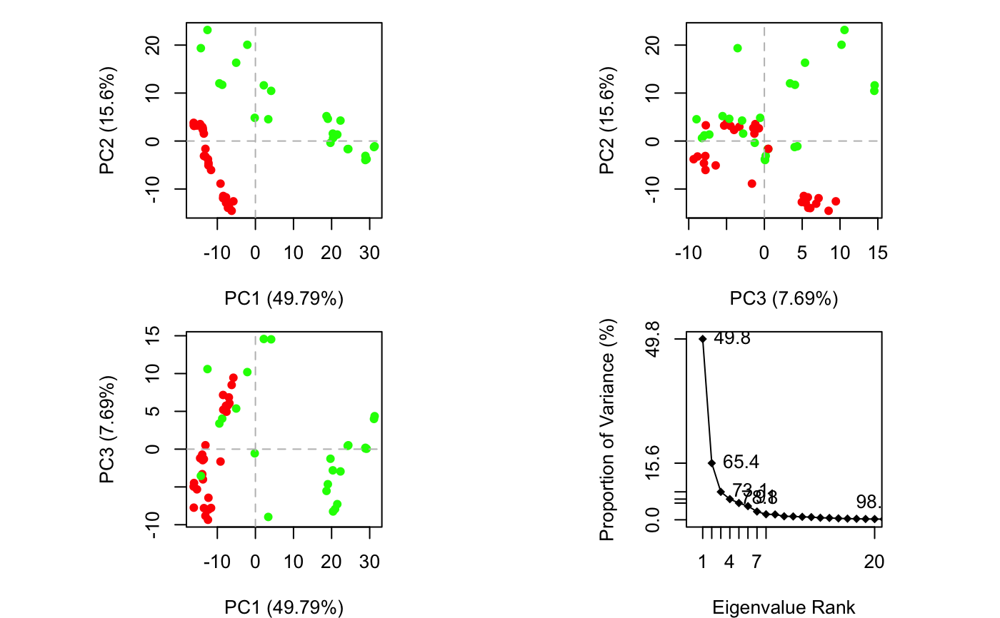
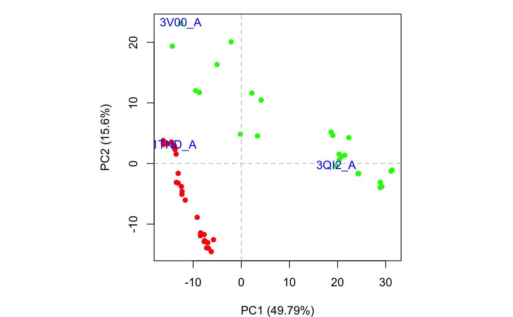

plot.pca.RdProduces a z-score plot (conformer plot) and an eigen spectrum plot (scree plot).
# S3 method for pca plot(x, pc.axes=NULL, pch=16, col=par("col"), cex=0.8, mar=c(4, 4, 1, 1),...) # S3 method for pca.scree plot(x, y = NULL, type = "o", pch = 18, main = "", sub = "", xlim = c(0, 20), ylim = NULL, ylab = "Proportion of Variance (%)", xlab = "Eigenvalue Rank", axes = TRUE, ann = par("ann"), col = par("col"), lab = TRUE, ...) # S3 method for pca.score plot(x, inds=NULL, col=rainbow(nrow(x)), lab = "", ...)
| x | the results of principal component analysis obtained with
|
|---|---|
| pc.axes | an optional numeric vector of length two specifying the principal components to be plotted. A NULL value will result in an overview plot of the first three PCs and a scree plot. See examples. |
| pch | a vector of plotting characters or symbols: see ‘points’. |
| col | a character vector of plotting colors. |
| cex | a numerical single element vector giving the amount by which plotting text and symbols should be magnified relative to the default. |
| mar | A numerical vector of the form c(bottom, left, top, right) which gives the number of lines of margin to be specified on the four sides of the plot. |
| inds | row indices of the conformers to label. |
| lab | a character vector of plot labels. |
| y | the y coordinates for the scree plot. |
| type | one-character string giving the type of plot desired. |
| main | a main title for the plot, see also 'title'. |
| sub | a sub-title for the plot. |
| xlim | the x limits of the plot. |
| ylim | the y limits of the plot. |
| ylab | a label for the y axis. |
| xlab | a label for the x axis. |
| axes | a logical value indicating whether both axes should be drawn. |
| ann | a logical value indicating whether the default annotation (title and x and y axis labels) should appear on the plot. |
| ... | extra plotting arguments. |
plot.pca is a wrapper calling both plot.pca.score and
plot.pca.scree resulting in a 2x2 plot with three score plots
and one scree plot.
Produces a plot of PCA results in the active graphics device and invisibly returns the plotted ‘z’ coordinates along the requested ‘pc.axes’. See examples section where these coordinates are used to identify plotted points.
Grant, B.J. et al. (2006) Bioinformatics 22, 2695--2696.
Barry Grant
pca.xyz, plot.bio3d
#> NOTE: Removing 49 gap positions with missing coordinate data #> retaining 305 non-gap positions for analysis.plot(pc.xray)## Identify points interactively with mouse clicks #identify(x, labels=basename.pdb(pdbs$id)) ## Add labels to select points inds <- c(1,10,37) text(x[inds,], labels=basename.pdb(pdbs$id[inds]), col="blue")## Alternative labeling method #labs <- rownames(annotation) #inds <- c(2,7) #plot.pca.score(pc.xray, inds=inds, col=vcolors, lab=labs) ## color by seq identity groupings #ide <- seqidentity(pdbs$ali) #hc <- hclust(as.dist(1-ide)) #grps <- cutree(hc, h=0.2) #vcolors <- rainbow(max(grps))[grps] #plot.pca.score(pc.xray, inds=inds, col=vcolors, lab=labs) detach(transducin)